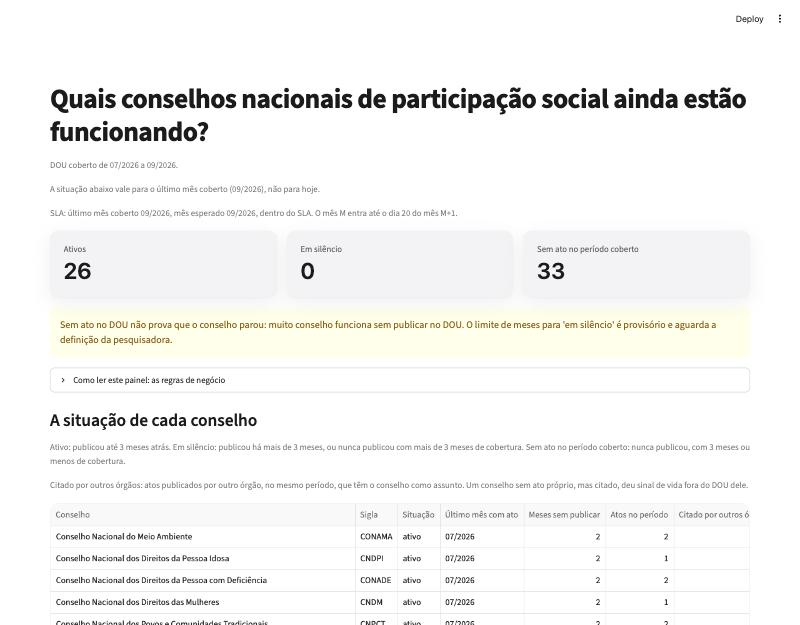

Quais conselhos nacionais de participação social ainda estão funcionando?
Conselho que para de funcionar não é extinto nem noticiado: só deixa de publicar no Diário Oficial.
A pesquisadora lia o DOU ato por ato e, em vinte anos, cobriu 5 conselhos.
A E3 responde para os 59 de uma vez, com o DOU de julho a setembro de 2026.
dbt
gold em estrela, 77 testes
Dagster
agenda, retry, backfill
Streamlit
a resposta no painel
1:00LuizaLuis · Bruno · Moura · Iago · Luiza · tag e3
A resposta · painel em Streamlit
A resposta na primeira linha
ao vivo: make painel → 127.0.0.1:8501

59
conselhos
26
ativos
0
em silêncio
33
sem ato no período
Período coberto: 07 a 09/2026, dentro do SLA.
Aviso amarelo: sem ato no DOU não prova que parou.
Citado por outros órgãos: 10 dos 33 sem ato próprio aparecem em atos de outros órgãos. O CNE, 28 vezes.
“Como ler este painel”: as regras de negócio por extenso, para quem não leu os ADRs.
Lê só a gold (DuckDB, analítico); a regra fica no dbt.
Volume dos três meses, do ZIP à gold
894 MB
3 ZIPs; 1,25 GB abertos
26.971
matérias da Seção 1
389
atos de conselho (1,4%)
3,7 MB
gold no DuckDB
2:00MouraDOU de julho a setembro de 2026 + 215 atos da planilha
A resposta · as regras da situação
Por que ninguém está “em silêncio”
26
ativo
O último ato próprio saiu até 3 meses antes do mês de referência (setembro de 2026).
0
em silêncio
O último ato próprio foi há mais de 3 meses, ou o conselho não publicou nada num período coberto de mais de 3 meses.
33
sem ato no período coberto
Não publicou nada, e o período coberto tem 3 meses ou menos: é cedo demais para chamar de silêncio.
Quem entra: órgão federal que tem ou teve nome começando com “Conselho”, menos CJF, CMN e CNJ, que não são de participação social. São 59 (ADR 0010).
Ato próprio: matéria publicada pelo próprio conselho. A planilha (2003 a 2020) não entra na situação, só na tipologia.
O limite de 3 meses é provisório: fica num parâmetro só do dbt (meses_ativo) e espera a pesquisadora.
O painel separa “não publicou” de “parou”, e mostra o segundo sinal de vida ao lado, sem misturar os dois.
1:00Mouramart_vitalidade · ADR 0010
Arquitetura · bronze, silver e gold
Do ZIP do Diário Oficial ao painel, num job só
Bronze é o arquivo como veio, silver é a tabela consolidada, gold é o modelo pronto para a pergunta. E1 trouxe o Postgres; E2, o bronze e a silver. A E3 acrescenta a gold, o orquestrador e o painel, e o pipeline fica todo em Python.
0:30MouraE1 → E2 → E3
Gold · modelo em estrela · ADR 0009
Uma estrela que guarda o mês sem ato
458
linhas por matéria
177
conselho × mês
5.428
se o grão fosse diário
Dimensão, dim_conselho: SCD tipo 2, uma linha por nome, com a vigência. Renomear é inserir: CNDM, CNDH e CNDPI têm duas linhas.
fct_ato: uma linha por matéria, ligada ao nome da época por asof join.
fct_conselho_mes: conselho × mês, com zero no mês sem ato.
fct_mencao: matéria de outro órgão × conselho citado.
Por que estrela, e não uma tabela só: a pergunta se mede pela ausência. Uma tabela por ato não tem linha para o mês sem ato; o fato mensal guarda o zero.
1:30Moura e Luizagranularidade.txt · dim_conselho-renomeados.txt
O que surpreendeu: o DOU vazio quase passou calado em três lugares: na vitalidade, no SLA e no teste de distribuição. Cada um ganhou um teste que falha sem a correção.
# o Postgres para antes da 1ª tentativaSTEP_UP_FOR_RETRY atos_do_mes
causa: [Errno -2] Name or service not known
# espera 30 s e tenta de novo
STEP_RESTARTED atos_do_mes
RUN_SUCCESSOK: a primeira tentativa caiu com o banco fora
e o retry recuperou
make demo-backfill DE=2026-07 ATE=2026-09
1ª rodada 2ª rodada
2026-07 gravadas=161 inalteradas=161
2026-08 gravadas=96 inalteradas=96
2026-09 gravadas=132 inalteradas=132
Um run por mês. Não roda ao vivo, porque leva 2 min. A segunda rodada não grava nada: os mesmos atos saem como inalterados, e a carga é idempotente.
sem retryMês não publicadoFalha na hora. A agenda tenta de novo no dia seguinte.
sem retryZIP corrompidoFalha de vez: repetir não conserta dado.
3 retries · 30 sBanco foraTenta de novo; se não voltar, falha com a causa.
causa com nomeTeste do dbt quebraO run falha, e a causa traz o nome do teste.